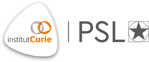

<div id="footer" class="panel">
  <div class="panel-footer">
	<div class="container-fluid">
		<div class="row">
			<div class="col-sm-4">
				
			</div>

			<div class="col-sm-4">
				<p>Links</p>
				<ul class="list-unstyled">
					<li><a href="https://institut-curie.org/">Institut Curie</a></li>
					<li><a href="https://github.com/rt2lab">Github</a></li>
					<li><a href="">Twitter</a></li>
				</ul>
			</div>

			<div class="col-sm-4">
				<p>Contact</p>

				Institut Curie<br>
				26 rue d'Ulm<br>
				75005 Paris<br>
				France
			</div>
		</div>

		<div class="row mt-3">
			<p class="text-center">Copyright RT2 Lab, 2019</p>
		</div>
	</div>
  </div>
</div>

<script src="https://ajax.googleapis.com/ajax/libs/jquery/1.11.3/jquery.min.js"></script>
<script src="{{ site.url }}{{ site.baseurl }}/js/bootstrap.min.js"></script>
